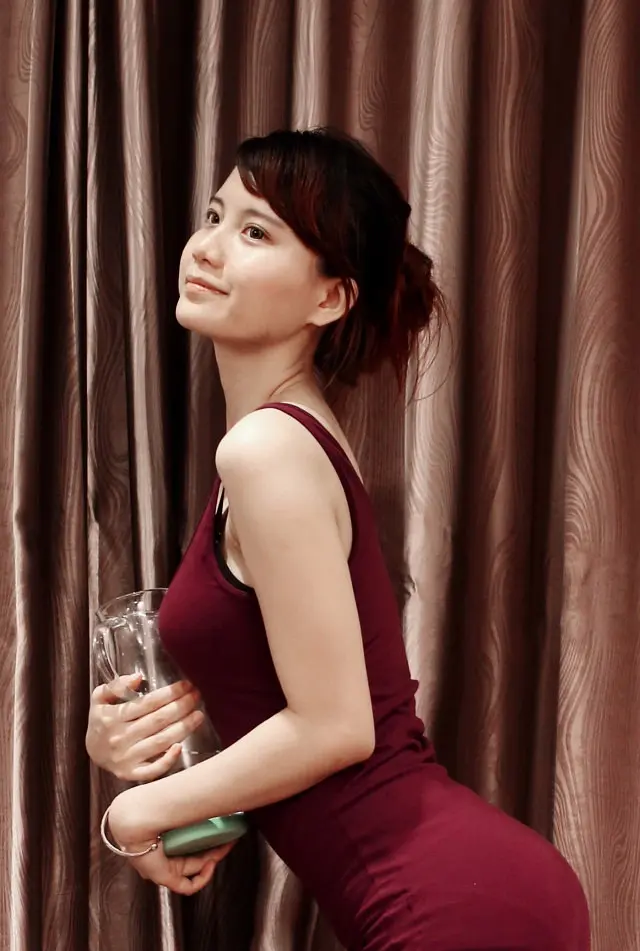
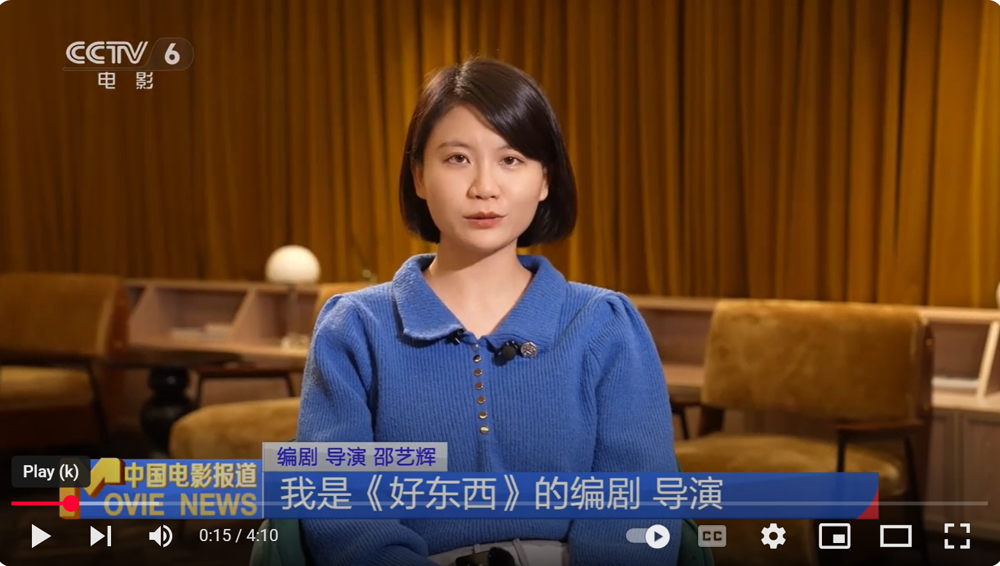

女 子 就 是 好
 毕业于北京电影学院文学系剧作专业， 2016年出版短篇小说集《人类要是没有爱情就好了》（北京联合读创出版）； 2018年创作长篇小说《最后的审判》在「一个」连载； 2020年创作电影剧本《爱情神话》入选第14届first青年电影展剧本创投会。获捕影传奇大奖和7望计划七印象特别关注奖； 2021年编剧并执导电影《爱情神话》，她凭借该电影获得第35届中国电影金鸡奖最佳编剧和中国电影导演协会奖年度导演； 2024年编剧并执导电影《好东西》。
